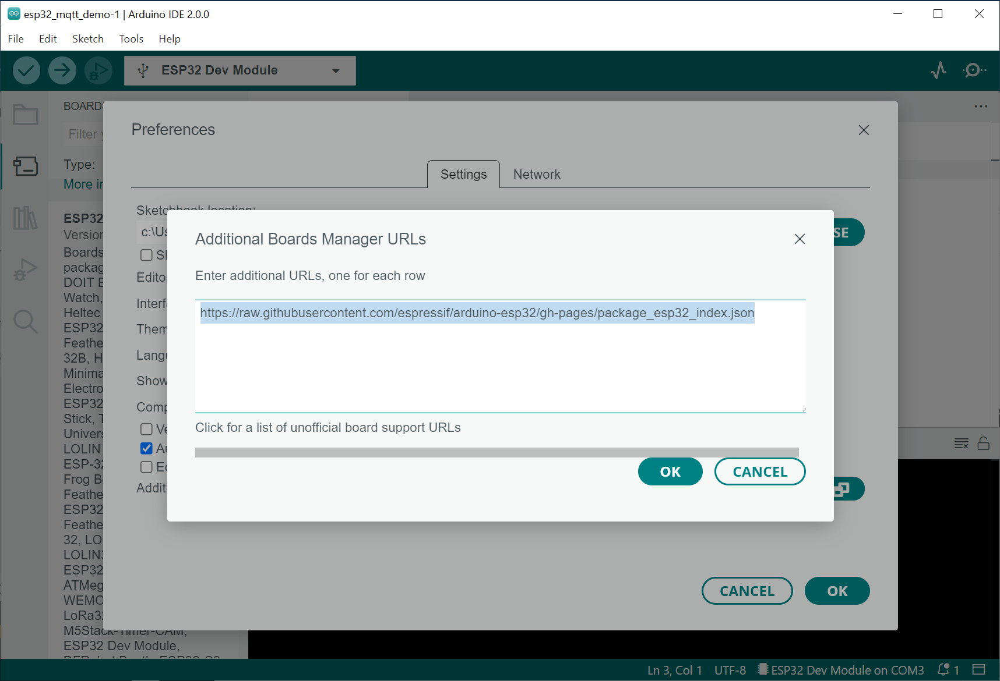
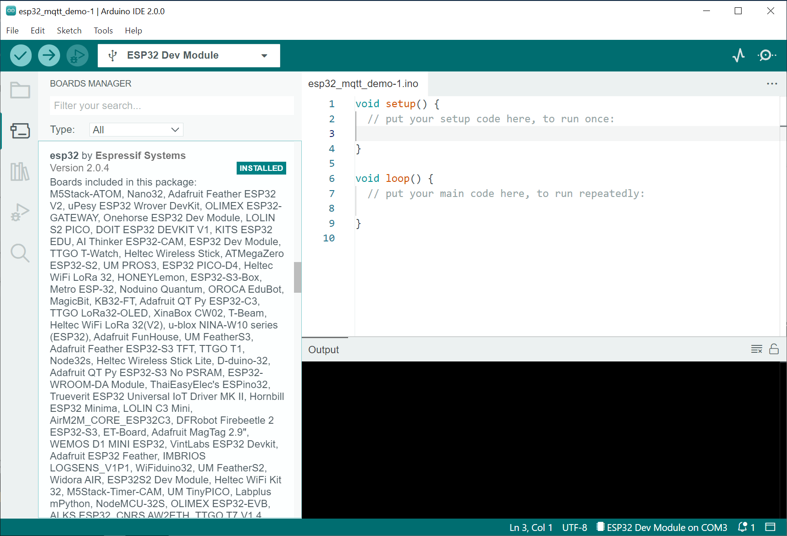
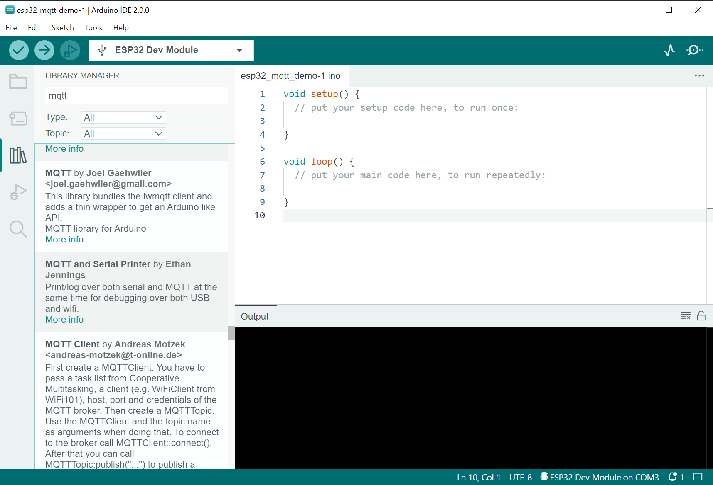
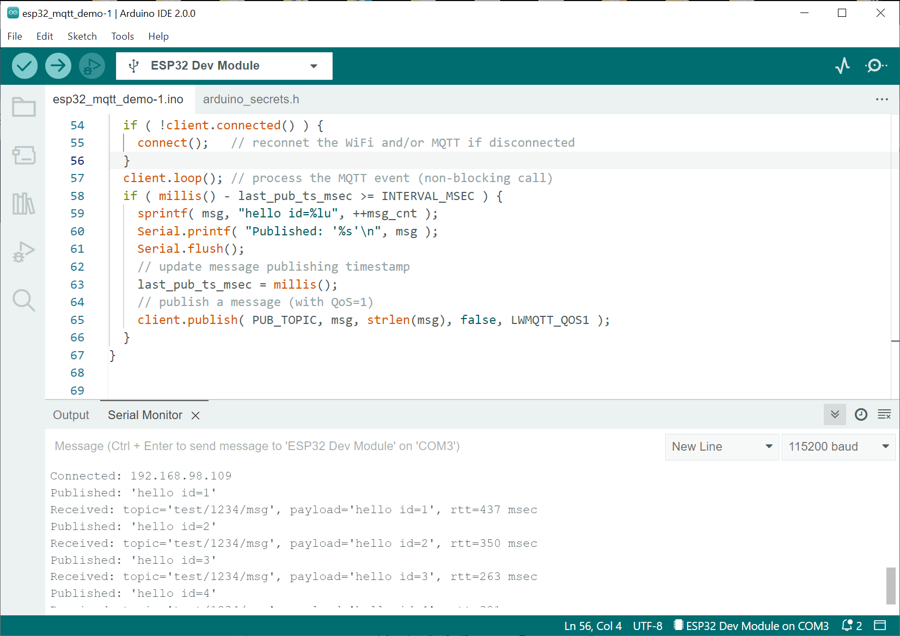
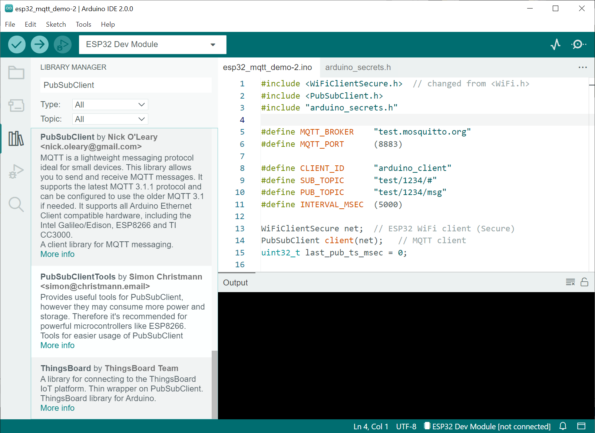
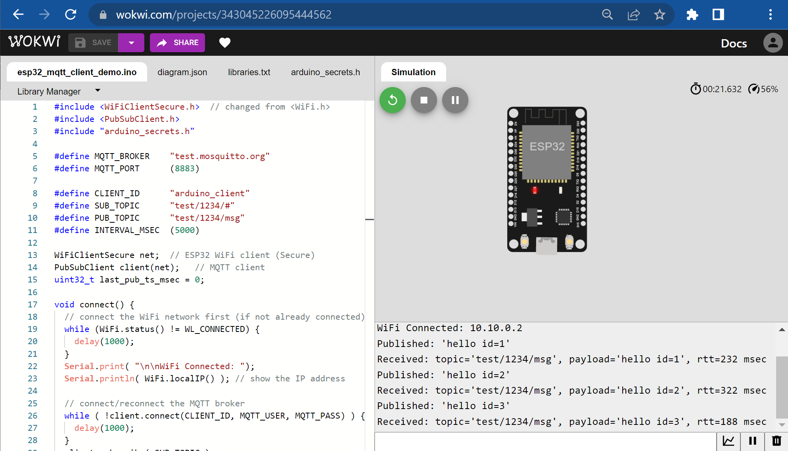
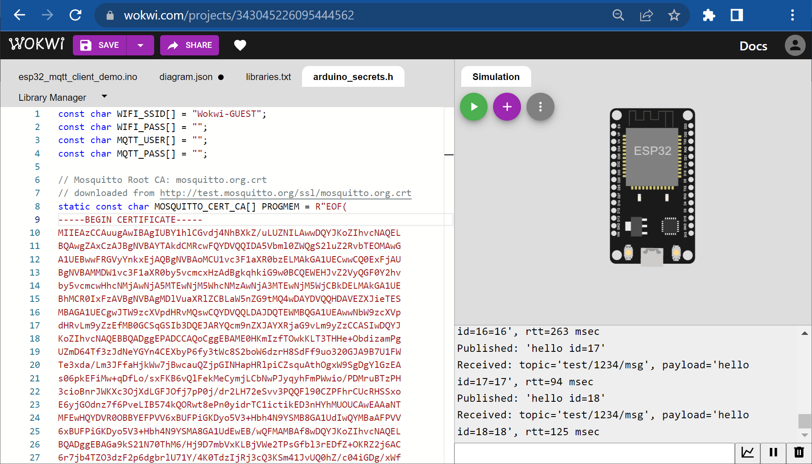
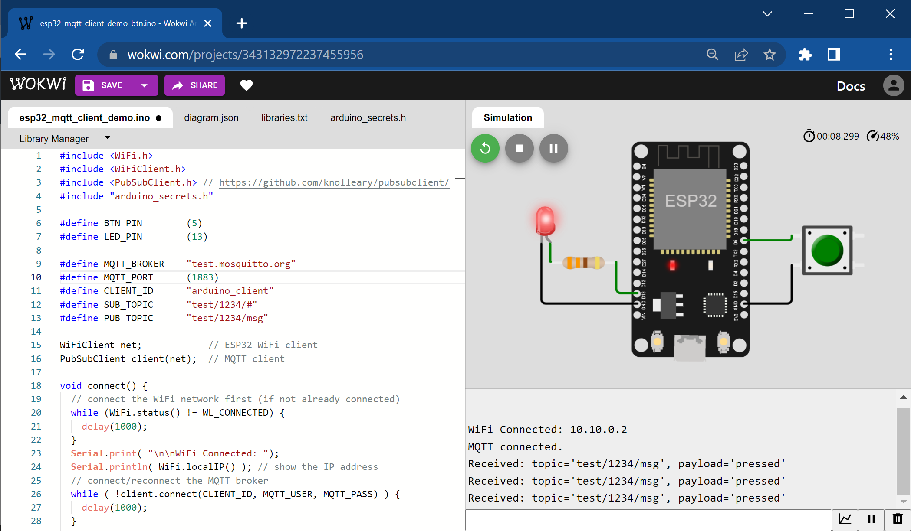

MQTT และการใช้งานสำหรับ Linux (ตอนที่ 5)#
เนื้อหาในตอนที่ 5 นำเสนอตัวอย่างการเขียนโค้ด Arduino สำหรับบอร์ดไมโครคอนโทรลเลอร์ ESP32 เพื่อเชื่อมต่อกับ MQTT Broker
▷ การเขียนโปรแกรม Arduino และการเชื่อมต่อด้วยโพรโทคอล MQTT#
บอร์ดไมโครคอนโทรลเลอร์ที่ได้เลือกมาลองใช้งานคือ ESP32 และสามารถนำมาใช้งานร่วมกับซอฟต์แวร์ Arduino IDE (ลองใช้ v2.0.0) หากยังไม่เคยใช้งาน Arduino IDE กับ ESP32 มาก่อน จะต้องมีการติดตั้ง Arduino-ESP32 Core ให้พร้อมสำหรับการใช้งาน
เริ่มต้นด้วยการเปิดใช้งานซอฟต์แวร์ Arduino IDE ซึ่งจะมีการสร้างไฟล์ Ardiuno Sketch (.ino) ไว้ให้แล้ว ให้บันทึกไฟล์โดยใช้ชื่อไฟล์ใหม่
จากนั้นไปยังเมนู File > Preferences ในหน้าต่าง Popup จะเห็นว่ามีช่องข้อความ ให้เพิ่มรายการ Additional boards manager URL และให้เพิ่มรายการต่อไปนี้ แล้วกดปุ่ม OK
https://raw.githubusercontent.com/espressif/arduino-esp32/gh-pages/package_esp32_index.json
จากนั้นไปที่ Board Manager เลือกจากไอคอนทางซ้ายมือ แล้วค้นหารายการ esp32
เพื่อกดติดตั้ง Arduino-ESP32 (เวอร์ชันล่าสุดที่ได้ลองใช้คือ v2.0.4)

รูป: การเพิ่มรายการสำหรับ Arduino-ESP32 Board Manager

รูป: การติดตั้ง Arduino-ESP32
เมื่อได้ติดตั้ง Arduino-ESP32 แล้ว ให้เลือกบอร์ดไมโครคอนโทรลเลอร์ ESP32 เช่น ESP32 Dev Module และหากนำบอร์ด ESP32 มาเชื่อมต่อกับคอมพิวเตอร์ของผู้ใช้ ผ่านทางพอร์ต USB จะมีรายการอุปกรณ์ที่แสดงตามหมายเลขพอร์ต USB (COM Port) และให้เลือกใช้หมายเลขพอร์ตที่ตรงกับอุปกรณ์
หากมองไม่เห็นรายการอุปกรณ์ ผู้ใช้ Windows จะต้องติดตั้ง USB Driver สำหรับชิป USB-to-Serial ที่มีการใช้งานอยู่บนบอร์ดไมโครคอนโทรลเลอร์ เช่น ไอซี CP2104 หรือ CH340 เป็นต้น (ซอฟต์แวร์ USB Driver สามารถดาวน์โหลดได้จากเว็บไซต์ของผู้ผลิตชิป)
ถัดไปเป็นการติดตั้งไลบรารี MQTT (รองรับการใช้งาน MQTT v3.1.1) สำหรับ Arduino และมีให้เลือกใช้ได้หลายตัวเลือก เช่น
- MQTT Library by Joel Gaehwiler (Github repo)
- PubSubClient by Nick O'Leary (Github repo)
- Async MQTT Library for ESP8266/ESP32 by Marvin Roger (Github repo)
- AsyncMQTT_Generic Library by Marvin Roger & Khoi Hoang (Github repo)
- Adafruit MQTT Library (Github repo)
จากนั้นไปที่ Library Manager เลือกจากไอคอนทางซ้ายมือ ค้นหาด้วยคำว่า mqtt
ให้คลิกเลือก "MQTT Library by Joel Gaehwiler" (ลองใช้เวอร์ชัน v2.5.0) แล้วกดปุ่ม
Install

รูป: การติดตั้งไลบรารี MQTT
ถัดไปเป็นโค้ดตัวอย่าง สาธิตการใช้คำสั่งเพื่อเชื่อมต่อ ESP32 เข้ากับระบบเครือข่าย WiFi แล้วจากนั้นจะเชื่อมต่อไปยัง MQTT Broker
- กำหนดให้
MQTT_BROKERเป็นหมายเลขไอพี (IP Address) ของโบรกเกอร์ เช่น บอร์ด Raspberry Pi ที่ทำหน้าที่เป็นโบรกเกอร์ และMQTT_PORTเป็นหมายเลขพอร์ตของโบรกเกอร์ เช่น 1883 WiFiClient net;เป็นการสร้างอ็อปเจกต์จากคลาสWiFiClientและอ้างอิงด้วยตัวแปรชื่อnetซึ่งจะใช้ในการเชื่อมต่อกับ WiFi- การเชื่อมต่อกับ WiFi HotSpot จำเป็นต้องกำหนดชื่อ SSID (
WIFI_SSID) และรหัสป้องกัน (WIFI_PASS) ด้วย MQTTClient client;เป็นการสร้างอ็อปเจกต์จากคลาสMQTTClientและอ้างอิงด้วยตัวแปรชื่อclientการทำงานของMQTTClientจะต้องใช้WiFiClientด้วย เนื่องจากโพรโทคอล MQTT ทำงานบนระดับ TCP/IP และใช้ WiFi ในการสื่อสารผ่านเครือข่าย- คำสั่ง
client.connect(...)เป็นการเริ่มต้นการเชื่อมต่อกับโบรกเกอร์ - การเชื่อมต่อกับโบรกเกอร์ ในบางกรณี จะต้องระบุชื่อผู้ใช้และรหัสผ่านด้วย
(ตั้งค่าโดยใช้
MQTT_USERและMQTT_PASSซึ่งได้ประกาศไว้ในไฟล์arduino_secrets.h) - เมื่อเชื่อมต่อกับเครือข่ายและโบรกเกอร์ได้แล้ว จะมีการสมัครรับข้อความ โดยใช้คำสั่ง
client.subscribe(...)และใช้หัวข้อที่กำหนดไว้โดยSUB_TOPICและส่งข้อความในหัวข้อที่กำหนดไว้โดยPUB_TOPIC(ทั้งสองกรณีจะใช้ QoS=1) ดังนั้นเมื่อส่งข้อความออกไปยังโบรกเกอร์ในแต่ละครั้ง โดยใช้คำสั่งclient.publish(...)ก็จะได้รับข้อความเดียวกันมาจากโบรกเกอร์ - คำสั่ง
client.onMessage( onMessageReceived )เป็นการกำหนดให้ใช้ฟังก์ชันonMessageReceived(...)เป็น Callback Function ซึ่งจะถูกเรียกให้ทำงาน เมื่อได้รับข้อความมาจากโบรกเกอร์ในแต่ละครั้ง
File: esp32_mqtt_demo-1.ino
#include <WiFi.h>
#include <MQTT.h> // https://github.com/256dpi/arduino-mqtt
#include "arduino_secrets.h"
#define MQTT_BROKER "192.168.98.227"
#define MQTT_PORT (1883)
#define CLIENT_ID "arduino_client"
#define SUB_TOPIC "test/1234/#"
#define PUB_TOPIC "test/1234/msg"
#define INTERVAL_MSEC (5000)
WiFiClient net; // ESP32 WiFi client
MQTTClient client; // MQTT client
uint32_t last_pub_ts_msec = 0;
void connect() {
// connect the WiFi network first (if not already connected)
while (WiFi.status() != WL_CONNECTED) {
delay(1000);
}
Serial.print( "\n\nConnected: ");
Serial.println( WiFi.localIP() ); // show the IP address
// connect/reconnect the MQTT broker
while ( !client.connect( CLIENT_ID, MQTT_USER, MQTT_PASS) ) {
delay(1000);
}
client.subscribe( SUB_TOPIC, LWMQTT_QOS1 );
}
// This is the callback function for the incoming MQTT message.
void onMessageReceived( String &topic, String &payload ) {
uint32_t now_msec = millis(); // message reception timestamp
Serial.printf( "Received: topic='%s', payload='%s', rtt=%lu msec\n",
topic.c_str(), payload.c_str(), now_msec-last_pub_ts_msec );
Serial.flush();
}
void setup() {
// initialize the Serial port
Serial.begin( 115200 );
// use WiFi station mode
WiFi.mode( WIFI_STA );
// start the WiFi client
WiFi.begin( WIFI_SSID, WIFI_PASS );
// initialize the MQTT broker
client.begin( MQTT_BROKER, MQTT_PORT, net );
// set keepalive to 60 seconds
client.setKeepAlive( 60 );
// connect with a clean session
client.setCleanSession( true );
// set the MQTT callback function
client.onMessage( onMessageReceived );
// connect the WiFi and the MQTT broker
connect();
}
void loop() {
static uint32_t msg_cnt = 0; // published message count
static char msg[32]; // message buffer (up to 32 chars)
if ( !client.connected() ) {
// reconnet the WiFi and/or MQTT if disconnected
connect();
}
client.loop(); // process the MQTT event (non-blocking call)
if ( millis() - last_pub_ts_msec >= INTERVAL_MSEC ) {
sprintf( msg, "hello id=%lu", ++msg_cnt );
Serial.printf( "Published: '%s'\n", msg );
Serial.flush();
// update message publishing timestamp
last_pub_ts_msec = millis();
// publish a message (with QoS=1)
client.publish( PUB_TOPIC, msg, strlen(msg), false, LWMQTT_QOS1 );
}
}
File: arduino_secrets.h มีการกำหนดค่าคงที่ดังนี้ เพื่อใช้ในการเชื่อมต่อเครือข่าย
WiFi และ MQTT Broker
const char WIFI_SSID[] = "YOUR_WIFI_SSID";
const char WIFI_PASS[] = "YOUR_WIFI_PASSWORD";
const char MQTT_USER[] = "MQTT_USERNAME";
const char MQTT_PASS[] = "MQTT_PASSWORD";

รูป: ข้อความเอาต์พุตใน Serial Monitor ที่ได้จากการทำงานของบอร์ด ESP32
หากต้องการลองใช้งานกับ test.mosquitto.org และใช้พอร์ต 1883 ให้เปลี่ยนการตั้งค่าใหม่ดังนี้
#define MQTT_BROKER "test.mosquitto.org"
#define MQTT_PORT (1883)
และในไฟล์ arduino_secrets.h ตั้งค่าใหม่สำหรับ MQTT_USER และ MQTT_PASS
const char MQTT_USER[] = ""; // empty string
const char MQTT_PASS[] = ""; // empty string
โค้ดตัวอย่างถัดไป สาธิตการใช้ไลบรารีที่มีชื่อว่า PubSubClient (ลองใช้เวอร์ชัน v2.8)
เพื่อเชื่อมต่อกับ test.mosquitto.org
และลองใช้พอร์ตหมายเลข 8883 แทน 1883
ซึ่งจะต้องมีข้อมูลสำหรับ CA Certificate ของโบรกเกอร์ดังกล่าว
(ได้จากไฟล์ mosquitto.org.crt)
- มีรูปการใช้คำสั่งแตกต่างไปจากโค้ดตัวอย่างแรกอยู่บ้าง เช่น มีการเปลี่ยนจากคลาส
WiFiClient(เดิมใช้กับพอร์ต 1883) มาใช้WiFiClientSecure(เพื่อใช้กับพอร์ต 8883) สำหรับตัวแปรnetและใช้คลาสPubSubClientแทนที่MQTTClientสำหรับตัวแปรclientเป็นต้น - มีการใช้คำสั่ง
net.setCACert( MOSQUITTO_CERT_CA )ในการเชื่อมต่อกับโบรกเกอร์ และMOSQUITTO_CERT_CAอ้างอิงข้อความที่เป็น CA Certificate (ได้จากไฟล์mosquitto.org.crt)
File: esp32_mqtt_demo-2.ino

รูป: ขั้นตอนการติดตั้งไลบรารี PubSubClient
#include <WiFiClientSecure.h> // used for TCP/MQTT ports 8883/8884
#include <PubSubClient.h> // https://github.com/knolleary/pubsubclient/
#include "arduino_secrets.h"
#define MQTT_BROKER "test.mosquitto.org"
#define MQTT_PORT (8883)
#define CLIENT_ID "arduino_client"
#define SUB_TOPIC "test/1234/#"
#define PUB_TOPIC "test/1234/msg"
#define INTERVAL_MSEC (5000)
WiFiClientSecure net; // ESP32 WiFi client (Secure)
PubSubClient client(net); // MQTT client
uint32_t last_pub_ts_msec = 0;
void connect() {
// connect the WiFi network first (if not already connected)
while (WiFi.status() != WL_CONNECTED) {
delay(1000);
}
Serial.print( "\n\nWiFi Connected: ");
Serial.println( WiFi.localIP() ); // show the IP address
// connect/reconnect the MQTT broker
while ( !client.connect(CLIENT_ID, MQTT_USER, MQTT_PASS) ) {
delay(1000);
}
client.subscribe( SUB_TOPIC );
}
// This is the callback function for the incoming MQTT message.
void onMessageReceived( char *topic, byte *payload, unsigned int length ) {
uint32_t now_msec = millis(); // message reception timestamp
((char *)payload)[length] = '\0';
Serial.printf( "Received: topic='%s', payload='%s', rtt=%lu msec\n",
topic, (char *)payload, now_msec-last_pub_ts_msec );
Serial.flush();
}
void setup() {
Serial.begin( 115200 ); // initialize the Serial port
WiFi.mode( WIFI_STA ); // WiFi Station mode
WiFi.begin( WIFI_SSID, WIFI_PASS ); // start the WiFi client
#if defined(MQTT_PORT) && (MQTT_PORT==8883 || MQTT_PORT==8884)
net.setCACert( MOSQUITTO_CERT_CA ); // set the CA certificate
#if (MQTT_PORT==8884)
net.setCertificate( CLIENT_CERT_CRT ); // set client certificate
net.setPrivateKey( CLIENT_PRIVATE_KEY ); // set private key
#endif
#endif
// initialize the MQTT broker
client.setServer( MQTT_BROKER, MQTT_PORT );
// set the callback function
client.setCallback( onMessageReceived );
// set buffer size
client.setBufferSize( 1024 );
connect(); // connect the WiFi and the MQTT broker
}
void loop() {
static uint32_t msg_cnt = 0; // published message count
static char msg[32]; // message buffer (up to 32 chars)
if ( !client.connected() ) {
connect(); // reconnect the WiFi and/or MQTT if disconnected
}
client.loop(); // process the MQTT event (non-blocking call)
if ( millis() - last_pub_ts_msec >= INTERVAL_MSEC ) {
sprintf( msg, "hello id=%lu", ++msg_cnt );
Serial.printf( "Published: '%s'\n", msg );
Serial.flush();
// update message publishing timestamp
last_pub_ts_msec = millis();
// publish a message
client.publish( PUB_TOPIC, msg );
}
}
ในไฟล์ arduino_secrets.h มีการเพิ่มค่าคงที่ MOSQUITTO_CERT_CA
ซึ่งเป็นข้อความที่นำมาจากไฟล์ mosquitto.org.crt ตามตัวอย่างดังนี้
// Mosquitto Root CA: mosquitto.org.crt
// downloaded from http://test.mosquitto.org/ssl/mosquitto.org.crt
static const char MOSQUITTO_CERT_CA[] PROGMEM = R"EOF(
-----BEGIN CERTIFICATE-----
MIIEAzCCAuugAwIBAgIUBY1hlCGvdj4NhBXkZ/uLUZNILAwwDQYJKoZIhvcNAQEL
BQAwgZAxCzAJBgNVBAYTAkdCMRcwFQYDVQQIDA5Vbml0ZWQgS2luZ2RvbTEOMAwG
A1UEBwwFRGVyYnkxEjAQBgNVBAoMCU1vc3F1aXR0bzELMAkGA1UECwwCQ0ExFjAU
BgNVBAMMDW1vc3F1aXR0by5vcmcxHzAdBgkqhkiG9w0BCQEWEHJvZ2VyQGF0Y2hv
by5vcmcwHhcNMjAwNjA5MTEwNjM5WhcNMzAwNjA3MTEwNjM5WjCBkDELMAkGA1UE
BhMCR0IxFzAVBgNVBAgMDlVuaXRlZCBLaW5nZG9tMQ4wDAYDVQQHDAVEZXJieTES
MBAGA1UECgwJTW9zcXVpdHRvMQswCQYDVQQLDAJDQTEWMBQGA1UEAwwNbW9zcXVp
dHRvLm9yZzEfMB0GCSqGSIb3DQEJARYQcm9nZXJAYXRjaG9vLm9yZzCCASIwDQYJ
KoZIhvcNAQEBBQADggEPADCCAQoCggEBAME0HKmIzfTOwkKLT3THHe+ObdizamPg
UZmD64Tf3zJdNeYGYn4CEXbyP6fy3tWc8S2boW6dzrH8SdFf9uo320GJA9B7U1FW
Te3xda/Lm3JFfaHjkWw7jBwcauQZjpGINHapHRlpiCZsquAthOgxW9SgDgYlGzEA
s06pkEFiMw+qDfLo/sxFKB6vQlFekMeCymjLCbNwPJyqyhFmPWwio/PDMruBTzPH
3cioBnrJWKXc3OjXdLGFJOfj7pP0j/dr2LH72eSvv3PQQFl90CZPFhrCUcRHSSxo
E6yjGOdnz7f6PveLIB574kQORwt8ePn0yidrTC1ictikED3nHYhMUOUCAwEAAaNT
MFEwHQYDVR0OBBYEFPVV6xBUFPiGKDyo5V3+Hbh4N9YSMB8GA1UdIwQYMBaAFPVV
6xBUFPiGKDyo5V3+Hbh4N9YSMA8GA1UdEwEB/wQFMAMBAf8wDQYJKoZIhvcNAQEL
BQADggEBAGa9kS21N70ThM6/Hj9D7mbVxKLBjVWe2TPsGfbl3rEDfZ+OKRZ2j6AC
6r7jb4TZO3dzF2p6dgbrlU71Y/4K0TdzIjRj3cQ3KSm41JvUQ0hZ/c04iGDg/xWf
+pp58nfPAYwuerruPNWmlStWAXf0UTqRtg4hQDWBuUFDJTuWuuBvEXudz74eh/wK
sMwfu1HFvjy5Z0iMDU8PUDepjVolOCue9ashlS4EB5IECdSR2TItnAIiIwimx839
LdUdRudafMu5T5Xma182OC0/u/xRlEm+tvKGGmfFcN0piqVl8OrSPBgIlb+1IKJE
m/XriWr/Cq4h/JfB7NTsezVslgkBaoU=
-----END CERTIFICATE-----
)EOF";
โค้ดตัวอย่างนี้สามารถนำไปทดลองใช้กับ WokWi Simulator ได้ หากยังไม่มีอุปกรณ์ฮาร์ดแวร์ให้ทดลอง
เมื่อสร้างโปรเจกต์ใหม่ และเลือกบอร์ด ESP32 Dev Kit v1 แล้ว
ให้เพิ่มรายการชื่อของไลบรารีที่ต้องการนำเข้าใช้งานในโปรเจกต์ เช่น PubSubClient และ MQTT
ชื่อละหนึ่งบรรทัด ในไฟล์ libraries.txt
การทำงานของ ESP32 ใน WokWi Simulator สามารถใช้เครือข่าย
WiFi เสมือนจริงได้ และจะต้องใช้ชื่อ SSID เป็น "Wokwi-GUEST" และรหัสผ่านเป็น ""

รูป: การจำลองการทำงานด้วย WokWi Simulator และแสดงข้อความเอาต์พุตใน Serial Monitor

รูป: ไฟล์ arduino_secrets.h ใน WokWi Simulator
แนวทางการทดลองเพิ่มเติม
- การต่อวงจรปุ่มและวงจร LED กับบอร์ด ESP32 เสมือนจริง เมื่อกดปุ่มแล้วปล่อยหนึ่งครั้ง ให้ส่งข้อความหรือสถานะไปยัง test.mosquitto.org หรือ โบรกเกอร์สาธารณะที่เข้าถึงได้ในอินเทอร์เน็ต หรือคอยรับข้อความจากโบรกเกอร์ เพื่อนำมาใช้กำหนดสถานะของ LED เป็นต้น
- ทดลองใช้ไลบรารี เช่น ArduinoJSon เพื่อส่งข้อความในรูปแบบของ JSON String ไปยังโบรกเกอร์

รูป: ตัวอย่างการต่อวงจรปุ่มกดและ LED ร่วมกับบอร์ด ESP32
▷ กล่าวสรุป#
บทความนี้ได้สาธิตการเขียนโค้ด Arduino สำหรับบอร์ดไมโครคอนโทรลเลอร์ ESP32 เพื่อเชื่อมต่อกับ WiFi และ Mosquitto MQTT Broker ในระบบเครือข่ายเดียวกัน หรือ เชื่อมต่อกับโบรกเกอร์สาธารณะ และสาธิตการนำโค้ดตัวอย่างไปทดลองกับ WokWi Simulator
This work is licensed under a Creative Commons Attribution-ShareAlike 4.0 International License.
Created: 2022-09-17 | Last Updated: 2022-09-22